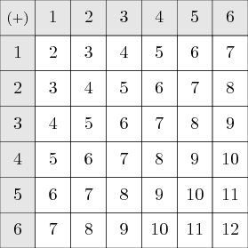

TeX Programming: The past, the present, and the future
Posted on March 5, 2009
There was an interesting thread on the ConTeXt mailing list, which I am summarizing in this post. To make the post interesting, I changed the problem slightly. So, the solutions posted here were not part of the thread, but are in the same spirit.
Suppose you want to typeset (in ConTeXt) all possible sum of roll of two die. Something like this:
One way to do this will be to type the whole thing by hand:
\bTABLE
\bTR \bTD $(+)$ \eTD \bTD 1 \eTD \bTD 2 \eTD \bTD 3 \eTD \bTD 4 \eTD \bTD 5 \eTD \bTD 6 \eTD \eTR
\bTR \bTD 1 \eTD \bTD 2 \eTD \bTD 3 \eTD \bTD 4 \eTD \bTD 5 \eTD \bTD 6 \eTD \bTD 7 \eTD \eTR
\bTR \bTD 2 \eTD \bTD 3 \eTD \bTD 4 \eTD \bTD 5 \eTD \bTD 6 \eTD \bTD 7 \eTD \bTD 8 \eTD \eTR
\bTR \bTD 3 \eTD \bTD 4 \eTD \bTD 5 \eTD \bTD 6 \eTD \bTD 7 \eTD \bTD 8 \eTD \bTD 9 \eTD \eTR
\bTR \bTD 4 \eTD \bTD 5 \eTD \bTD 6 \eTD \bTD 7 \eTD \bTD 8 \eTD \bTD 9 \eTD \bTD 10 \eTD \eTR
\bTR \bTD 5 \eTD \bTD 6 \eTD \bTD 7 \eTD \bTD 8 \eTD \bTD 9 \eTD \bTD 10 \eTD \bTD 11 \eTD \eTR
\bTR \bTD 6 \eTD \bTD 7 \eTD \bTD 8 \eTD \bTD 9 \eTD \bTD 10 \eTD \bTD 11 \eTD \bTD 12 \eTD \eTR
\eTABLE
I am using Natural Tables since it is very easy to change their output. For example, to get the effect shown in the above figure, I can just add
\setupTABLE[each][each][width=2em,height=2em,align={middle,middle}]
\setupTABLE[r][1][background=color,backgroundcolor=gray]
\setupTABLE[c][1][background=color,backgroundcolor=gray]
But that is not the point of this post. Typing everything by hand is error prone, and non-reusable. I want to show how to automate the above task. In any ordinary programming language we would do this as (pseudo code)
"start table"
"start table row"
"table element: (+)"
for y in [1..6] do
"table element: #{y}"}
"stop table row"
for x in [1..6] do
"start table row"
"table element: #{x}"
for y in [1..6] do
"table element #{x+y}"
end
"stop table row"
end
"stop table"
Unfortunately, TeX is no ordinary programming language. The first thing that comes to mind is to use ConTeXt’s equivalent of a for loop—\dorecurse
\bTABLE
\bTR
\bTD $(+)$ \eTD
\dorecurse{6}
{\bTD \recurselevel \eTD}
\eTR
\dorecurse{6}
{\bTR
\bTD \recurselevel \eTD
\edef\firstrecurselevel{\recurselevel}
\dorecurse{6}
{\bTD \the\numexpr\firstrecurselevel+\recurselevel \eTD}
\eTR}
\eTABLE
This however does not work as expected because \dorecurse is not fully expandable. One way to get around this problem is to expand the appropriate parts of the body of \dorecurse
\bTABLE
\bTR
\bTD $(+)$ \eTD
\dorecurse{6}
{\expandafter \bTD \recurselevel \eTD}
\eTR
\dorecurse{6}
{\bTR
\edef\firstrecurselevel{\recurselevel}
\expandafter\bTD \recurselevel \eTD
\dorecurse{6}
{\expandafter\expandafter\expandafter
\bTD
\expandafter\expandafter\expandafter
\the\expandafter\expandafter\expandafter
\numexpr\expandafter\firstrecurselevel\expandafter
+%
\recurselevel
\eTD}
\eTR}
\eTABLE
Behold! All those \expandafters. The reason they are needed was succinctly explained by David Kastrup in his TeX interview
Instead, macros are used as a substitute for programming. TeX’s macro expansion language is the only way to implement conditionals and loops, but the corresponding control variables can’t be influenced by macro expansion (TeX’s “mouth” in Knuth’s terminology). Instead assignments must be executed by the back end (TeX’s “stomach”). Stomach and mouth execute at different times and independently from one another. But it is not possible to solve nontrivial programming tasks with either: only the unholy chimera made from both can solve serious problems. eTeX gives the mouth a few more teeth and changes some of that, but the changes are not really fundamental: expansion still makes no assignments.
Once you get the hang of it, adding all those \expandafters is “simple” (Taco Hoekwater in a post):
The trick to \expandafter is that you (normally) write it backwards until reaching a moment in time where TeX is not scanning an argument.
Say you have a macro that contains some stuff in it to be typeset by
\type:\def\mystuff{Some literal stuff}Then you begin with
\type{\mystuff}but that obviously doesn’t work, you want the final input to look like
\type{Some literal stuff}Since
\expandafterexpands the token that follows the after next token – whatever the next token is – you have to insert it backwards across the opening brace of the argument, like so:\type\expandafter{\mystuff}But this wouldn’t work, yet: you are still in the middle of an expression (the
\typeexpects an argument, and it gets\expandafteras it stands).Luckily,
\expandafteritself is an expandable command, so you jump back once more and insert another one:\expandafter\type\expandafter{\mystuff}Now you are on ‘neutral ground’, and can stop backtracking. Easy, once you get the hang of it.
Fortunately, in ConTeXt you do not need to do all this mental arithmetic. ConTeXt provides a command \expanded which expands its argument. It only works if the expanded code does not try to scan the next character. In this case, \bTD—\eTD can be included in \expanded, while \bTR—\eTR cannot. So we end up with:
\bTABLE
\bTR
\bTD $(+)$ \eTD
\dorecurse{6}
{\expanded{\bTD \recurselevel \eTD}}
\eTR
\dorecurse{6}
{\bTR
\expanded{\bTD \recurselevel \eTD}
\edef\firstrecurselevel{\recurselevel}
\dorecurse{6}
{\expanded{\bTD \the\numexpr\firstrecurselevel+\recurselevel\relax \eTD}}
\eTR}
\eTABLE
Wolfgang Schuster posted a much neater solution.
\bTABLE
\bTR
\bTD $(+)$ \eTD
\dorecurse{6}
{\bTD #1 \eTD}
\eTR
\dorecurse{6}
{\bTR
\bTD #1 \eTD
\dorecurse{6}
{\bTD \the\numexpr#1+##1 \eTD}
\eTR}
\eTABLE
This makes TeX appear like a normal programming language. But only TeX wizards like Wolfgang can discover such solutions. You need to know the TeX digestive system inside out to even attempt something like this. Inspired by Wolfgang’s solution, I tried the same thing with ConTeXt’s lesser known for loops.
\bTABLE
\bTR
\bTD $(+)$ \eTD
\for \y=1 \to 6 \step 1 \do
{\bTD #1 \eTD}
\eTR
\for \x=1 \to 6 \step 1 \do
{\bTR
\bTD #1 \eTD
\for \y=1 \to 6 \step 1 \do
{\bTD \the\numexpr#1+##1 \eTD}
\eTR}
\eTABLE
Don’t worry if you don’t understand how the above works. With LuaTeX, even normal users have hope. Luigi Scarso posted the following code:
\startluacode
tprint = function(s) tex.sprint(tex.ctxcatcodes,s) end
tprint('\\bTABLE')
tprint('\\bTR')
tprint('\\bTD $(+)$ \\eTD')
for y = 1,6 do
tprint('\\bTD ' .. y .. '\\eTD')
end
tprint('\\eTR')
for x = 1,6 do
tprint('\\bTR')
tprint('\\bTD ' .. x .. '\\eTD')
for y = 1,6 do
tprint('\\bTD' .. x+y .. '\\eTD')
end
tprint('\\eTR')
end
tprint('\\eTABLE')
\stopluacode
Finally, with LuaTeX, we can implement simple algorithms in a simple way
inside TeX. In this case, the pure TeX solution using \dorecurse wasn’t too
difficult. But try to come up with a pure TeX solution that prints the
average of the numbers.
Here is a hint. Convert the numbers to dimensions by multiplying by 1pt, do averaging using \dimexpr, then get rid of the point using \withoutpt and hope that the fixed precision mathematics in TeX did not mess things up.
Addendum:
With current ConTeXt, I would use:
\startluacode
context.bTABLE()
context.bTR()
context.bTD() context("$(+)$") context.eTD()
for y = 1,6 do
context.bTD() context(y) context.eTD()
end
context.eTR()
for x = 1,6 do
context.bTR()
context.bTD() context(x) context.eTD()
for y = 1,6 do
context.bTD() context(x+y) context.eTD()
end
context.eTR()
end
context.eTABLE()
\stopluacode
This entry was posted in Programming and tagged tables, separating content and presentation, luatex.